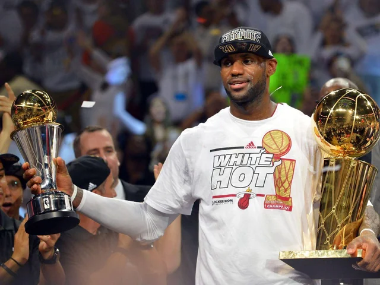

It's Effortless.
It's Effortless.
Heat Check
2011
In 2011, LeBron joined the Miami Heat, forming a superteam destined for glory. Despite dominating the season and reaching the Finals, LeBron faltered, and the underdog Mavericks claimed victory. It was a humbling setback in his quest for greatness.
2012
In 2012, LeBron James rose from past failures, leading the Miami Heat to redemption. Dominating the league, he claimed his third MVP and led the Heat to the NBA championship, conquering the Thunder in the Finals. His long-awaited triumph solidified his place among the legends.
2013
In 2013, LeBron James cemented his greatness, winning his fourth MVP and leading the Miami Heat to a second consecutive championship. His heroic performances, including the iconic Game 7 victory over the Spurs, elevated him to mythic status, solidifying his reign as the NBA's true king.
| Season | PPG | APG | RPG |
|---|---|---|---|
| 2011-12 | 27.1 | 6.2 | 7.9 |
| 2012-13 | 26.8 | 7.3 | 8.0 |
This table showcases LeBron James' MVP stats during his time with the Miami Heat. It highlights the years he won the prestigious MVP Award.
His first of many
